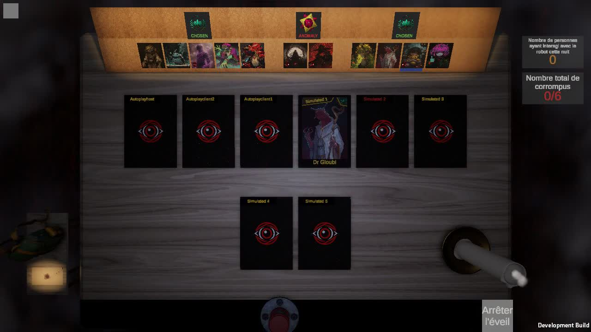

La bougie se refait (tour 4)
Tes choix du tour 3 : ta place (à droite de tes cartes, taille 0,79 : c'est elle ici), B3 une bougie
neuve à chaque minuteur « mais qu'elle se remette correctement, pas instantané, peut-être un shader », N2 la
nuit, la flamme seule sans tic-tac.
Ta place, B3 et N2 sont codés et tournent en partie (le pied du bougeoir ne passe plus dans la table). Reste à choisir comment le moignon redevient une bougie neuve. Images :
la vraie bougie rendue depuis le jeu à ta place (sa vraie fonte, image par image) ; en jeu ce sera un shader sur la
bougie 3D.
Comment elle se refait
Même bougie, même moment sur chaque cadre ; la boucle dure 7 secondes, la reconstruction 1,8 seconde.
R1Le temps rembobiné
Sa fonte jouée à l'envers, vite : la cire remonte, les coulures rentrent, la flaque se résorbe. On
comprend tout de suite que le temps est remis à zéro.
R2Elle renaît par le bas, en braise
Le moignon se défait en cendre pendant qu'une bougie neuve se forme du pied vers le haut, sous une
ligne de braise qui monte. En jeu : un shader de dissolution avec un bord incandescent.
R3Elle s'enfonce et repousse
Le moignon s'enfonce dans le bougeoir comme dans de la cire chaude, puis une bougie neuve en sort et
monte jusqu'à sa hauteur.
La nuit, vue de dessus
Vraie partie (hôte Dryade, ton tour de nuit), bougie à ta place. De nuit la caméra est juste au-dessus de la table :
une bougie haute près du bord a l'air couchée (le haut, plus près de la caméra, part vers l'extérieur). Ici le tour
a été très court (le bot a joué tout de suite), la flamme se voit à peine.

V1Comme ça
C'est la vraie perspective, on s'y fera.
V2Une bougie plus trapue
Même largeur, un tiers moins haute : elle penche moins vue de dessus et cache moins de cartes au vote,
mais elle a moins de hauteur à perdre en fondant.
V3Plus près du centre
Ta place, mais rentrée vers le milieu de la table (près des deux cartes du bas) : elle penche beaucoup
moins de nuit, elle reste à droite de tes cartes au vote.